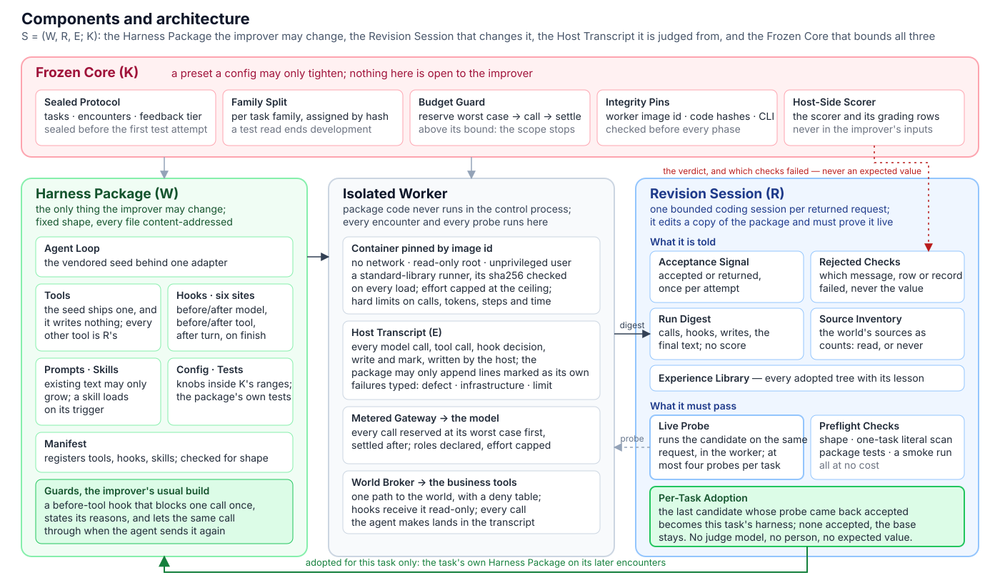
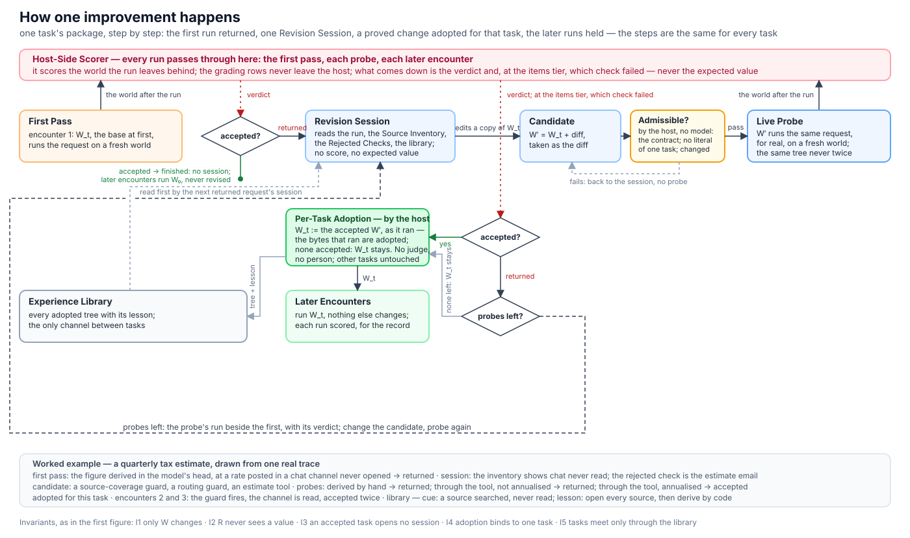

When a request comes back returned, a Revision Session reads the agent's own run, changes its Harness Package — tools, hooks, skills, prompts — and a Live Probe runs the same request for real. Only an accepted probe is adopted, and only for that task. The session is never shown an answer.
A condensed replay of one real trace: a quarterly tax estimate. The host writes every line on the left; the session only ever sees the lines marked for it. The states on the right light up as the loop moves. The expected value never appears, because the session never sees it.
S = (W, R, E; K): the package a session may change, the session that changes it, the transcript it reads, and the Frozen Core that bounds all three.

Two return edges: probes left, the session tries again with the probe's run beside the first; and the Experience Library, the only channel between tasks.

On a quarterly tax estimate the agent derived the figure in its head, at a rate it never saw: the change had been posted in a chat channel it never opened. Returned. One Revision Session, told only that and which check failed, built three components. The third probe was accepted and held on every later encounter.
Every tier carries the Run Digest and the Source Inventory as counts. The tiers add only what is listed; the grading rows stay on the host at every tier.
The model as it ships, at its highest effort, on the official leaderboard; the same model at a cheaper effort running the harness reharness built from its own runs, on the benchmark's held-out tasks. Every reharness number was sealed before the first test attempt.
| Setting | Pass rate | Cost |
|---|---|---|
| Claude Opus 5.5 on the AutomationBench leaderboard, effort Max | 42.47% | — |
| Best finance score on the AutomationBench leaderboard, any model, highest effort | 50.00% | — |
| Claude Opus 5.5 with reharness — finance, requests that repeat, steady state, effort medium | 68% +4.0 over the first pass [−4.0, +12.0] · no passing task lost | $184 |
| Claude Opus 5.5 with reharness — finance, one evolved package for the domain | 62.7% +8.0 [−4.0, +22.7] · each attempt 22% cheaper | $210 |
| Claude Opus 5.5 with reharness — Marketing, one evolved package for the domain | 54.3% +13.0 [+2.2, +26.1] | $153 |
An open-source self-improving agent harness: a bounded form of recursive self-improvement in which an LLM agent's own model revises the harness the agent runs in — tools, hooks, skills, prompts — from the agent's own returned runs, and proves every change with a live run before it is adopted.
The bounded kind. The agent's model improves the agent's harness; the weights, the scorer, the feedback tier, the package contract and the bounds are frozen, and the Revision Session that makes the change is not itself improved by the loop.
Everything around the model that makes it an agent: the loop, the tools it may call, the hooks before and after model and tool calls, its skills, prompts and config. reharness treats that as one versioned package with a fixed shape, and changes only that.
No weights change and no prompt is optimized against a score. A change is harness engineering — a guard, a tool, a skill — written by a session that read the failing run and was never shown the answer, adopted only after a live run on the same request came back accepted.
Habits, not answers: open every unread source before writing, derive figures by code, route a derived value through a tool. These appeared in independent sessions with none of the words in the prompt.
Yes, through an adapter. The benchmark's tasks, tools and scorer sit behind one adapter; a real business tool set fits behind the same Package Contract.
Python 3.11+, Docker for the isolated worker, headless Claude Code for the agent and the session. The smoke and freeze steps cost nothing; a repeat run calls a model.
# install git clone https://github.com/e13ven-arch/reharness && cd reharness pip install -e . # checks at no cost: splits, scorer contract, the seed's literals reharness bench --config examples/automationbench/quickstart-repeat.toml --phase smoke --checks-only # freeze K and the Sealed Protocol, then run the repeated-request loop reharness freeze --config examples/automationbench/quickstart-repeat.toml reharness bench --config examples/automationbench/quickstart-repeat.toml --phase repeat --arm learn reharness bench --config examples/automationbench/quickstart-repeat.toml --phase report